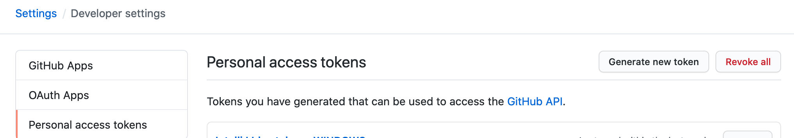
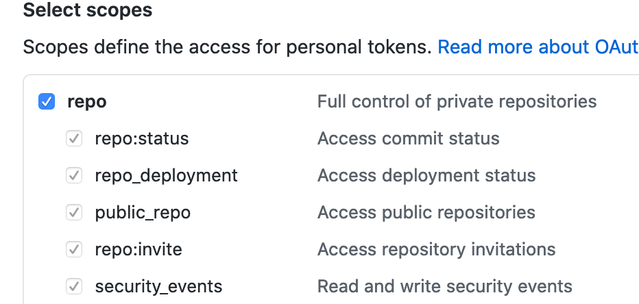

- Today by a complete accident I found that there is a thing called
settings repository. - How to set this up
- Bonus (I didn’t test this one)
My setup looks like this: I have Windows PC with Linux installed on a separate drive, also I have 2 MacBooks for work, and rarely used Linux ThinkPad. Keeping my IntelliJ settings in sync at all of those machines wasn’t really possible. If I find some setting that improves my workflow at my office machine, and after some time I want to work on a pet project on my own PC - I get this itch of not having this setting I had on MacBook… so I can export my settings and then import it. And the other way around multiplied by the number of machines.
Today by a complete accident I found that there is a thing called settings repository.
What it does is basically storing your settings in the repository of your choice and automatically synchronizing local settings with those in the repo. So I used the same repo on all machines (ok on 2 yet) and it looks like it’s solving my problem. I use the same repo for Android Studio and IntelliJ settings since I like to have the same settings for keyboard shortcuts, macros, default code style, etc. So far so good, no issues. But as I said - I learned this today 😄
There is another option to sync your settings in IntelliJ Idea, with official JetBrains plugin IDE Settings Sync IDE Settings Sync but it has rating 2.1 out of 5 with a majority of 1s so… I stick with setting repo.
How to set this up
I recommend starting with creating new repository for your settings on GitHub. I believe most developers already have an account there and since some time ago private repos are free.
After setting the repo copy its HTTPS address

And go to IntelliJ File→Manage IDE Settings→Settings Repository, or CMD+Shift+A and type settings repository if you are lazyass like me.

You will now have to paste the link to your new repo and click Override Remote - this is like initial commit and push for your settings.
You may be asked for GitHub login/password but it is recommended to use an access token that you can generate for each machine separately on your GitHub Settings page. To generate new one you need to go to your account settings→Developer Settings→Personal Access Tokens and click “Generate new token” button

Now the worst part - picking up the name for token, so if you call your computer for example Anton I suggest something like IDE settings - Anton so you know where it’s used and if you replace Anton with another machine you will know which token to remove. For Scopes all you need is repo

After you generate the token with a shiny green button on the bottom you will have one and only chance to copy it. When you paste token to IntelliJ popup it should work like a charm and send your settings to GitHub. If you inspect settings repository now you can see that your IDE code styles, color scheme, inspections, live templates a lot of other XML files are there. Also plugins settings but unfortunately not plugin list - you have to manually install plugins on every machine.
You will have to repeat this procedure on every machine with a new token, you don’t want to use the same token everywhere. After the initial commit with settings is pushed to a repository on the next computer you should rather pick “override local” or better “merge” button when adding the repository for synchronizing settings. This will try to merge your current IDE settings with those at the repository, and sometimes you may face a conflict 😄
Your settings will be synchronized with repo each time you open or close IDE or with every Project Update or a Push from IDE is performed. You can also manually request an update with going to VCS→Sync Settings→Merge

Bonus (I didn’t test this one)
There is also an option to set additional setting sources as read-only repositories - for example, if in your organization you have some live templates, file templates, deployment options, etc. but you shouldn’t be able to randomly override those. You do it in Preferences→Tools→Settings Repository with little + on the bottom.